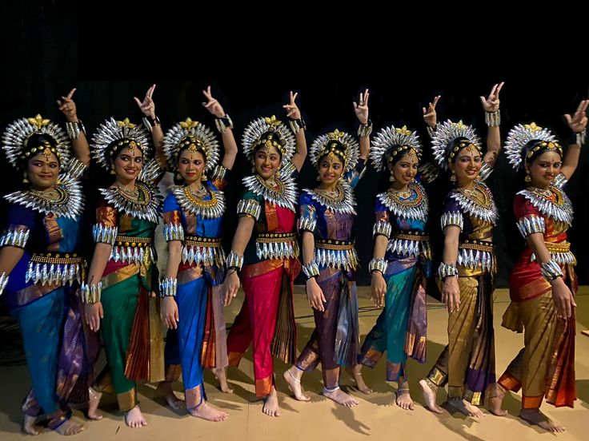

Discover Bharatanatyam

Bharatanatyam is one of the oldest and most celebrated classical dance forms of India. It originated in Tamil Nadu and is known for its graceful movements, expressive gestures and rhythmic footwork.
This traditional art form combines dance, music, expression and storytelling. Every movement has a meaning, allowing performers to communicate emotions and stories through their body language.
What Makes Bharatanatyam Special?
Bharatanatyam is a combination of three important aspects: expression, melody and rhythm. Dancers use hand gestures, facial expressions and precise movements to bring stories to life.
A Dance With Ancient Roots
The dance draws on the Natya Shastra, an ancient Sanskrit treatise on the performing arts. For centuries it was performed in the temples of Tamil Nadu, where it was known as Sadir or Dasi Attam.
The Three Pillars of the Dance
- Nritta: pure dance, made of rhythmic steps and poses
- Nritya: expressive dance that tells a story through gestures and face
- Natya: drama, where the dancer acts out characters
Main Features
- Graceful and rhythmic body movements
- Expressive facial expressions
- Traditional costumes and jewellery
- Hand gestures known as mudras
- Classical Carnatic music accompaniment
Bharatanatyam continues to be performed on stages across the world, preserving India's rich cultural heritage.